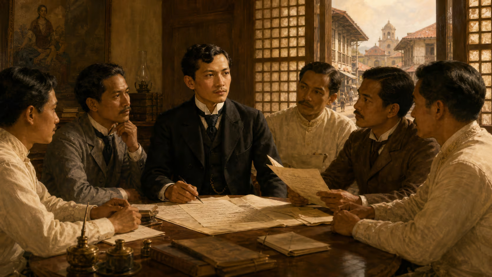

On July 3, 1892, José Rizal gathered a group of Filipinos in a house on
Ilaya Street in Tondo, Manila, and founded La Liga Filipina, the Philippine League.
It was the most direct civic action he had ever taken on home soil:
a formal organization, a written constitution, elected officers, a dues structure,
and a program of mutual aid, legal defense, scholarships,
and economic cooperation. Reform, organized and sustained, from the ground up.
La Liga Filipina aimed to empower Filipinos from within by uniting the archipelago into a cohesive national body and providing mutual protection against injustices. Functioning as a cooperative network, the organization used pooled funds to offer business loans, support agriculture, and fund education. Through these goals of unity, mutual assistance, and social reform, the movement sought to uplift Filipino society morally and economically, laying the groundwork for self-determination.
In June 1892, Dr. José Rizal returned to the Philippines and founded La Liga Filipina in Tondo, Manila, on July 3. Despite its peaceful focus on national unity, mutual aid, and socio-economic reform, Spanish authorities viewed any organization led by Rizal as a major political threat.
Despite closely monitoring Rizal for his subversive novels and reformist activities, Spanish authorities required formal justification for his arrest. They claimed to find anti-friar leaflets titled Pobres Frailes in the luggage of Rizal and his sister Lucia upon their arrival from Hong Kong, providing the needed pretext.
On July 6, 1892, Governor-General Eulogio Despujol confronted Rizal at Malacañan Palace regarding the Pobres Frailes leaflets. Despite Rizal's denials, Despujol ordered his immediate arrest and imprisonment in Fort Santiago under military guard.
The following day, on July 7, 1892, Governor-General Despujol issued a decree published in the official Gaceta de Manila ordering Rizal's banishment.
Late on July 14, 1892, Rizal was shipped under heavy guard to Dapitan, arriving on July 17 to begin a four-year exile. This separation from Manila severed his direct leadership of the reform movement, enabling Andrés Bonifacio and other radical revolutionaries to establish the Katipunan.
There is a particular kind of historical significance that comes not from success but from instructive failure. La Liga Filipina is a case study in what happens when a colonial power responds to a lawful, loyalist civic organization with arrest and exile: it converts reformists into revolutionaries, and it gives the people who have been watching the clearest possible evidence of what they are dealing with. Rizal did not live to see the revolution he had spent his life trying to prevent and his death helped make inevitable. But the Liga he founded on July 3, 1892, and his arrest three days later, were the hinge on which that history turned.